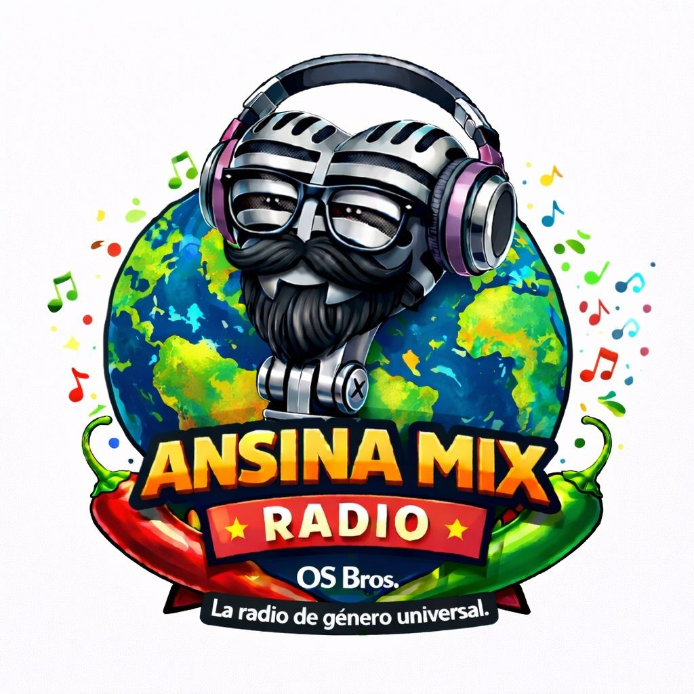

ANSINA MX Radio
En vivo • 24/7
▶ Reproducir
⏹ Detener
Volumen
Listo
🔊
Para escuchar:
toca “Reproducir”. (En celular el audio NO puede iniciar solo).
🎵 Ahora: (cargando...)
Stream directo:
/radio
Tip: si abres desde WhatsApp/Facebook, usa “Abrir en Chrome” para menos bloqueos.